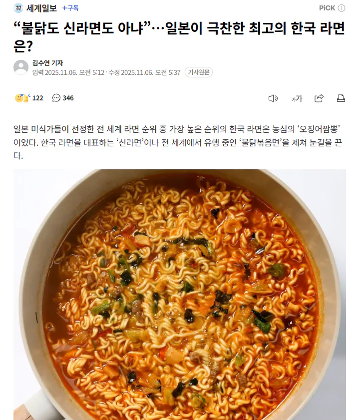
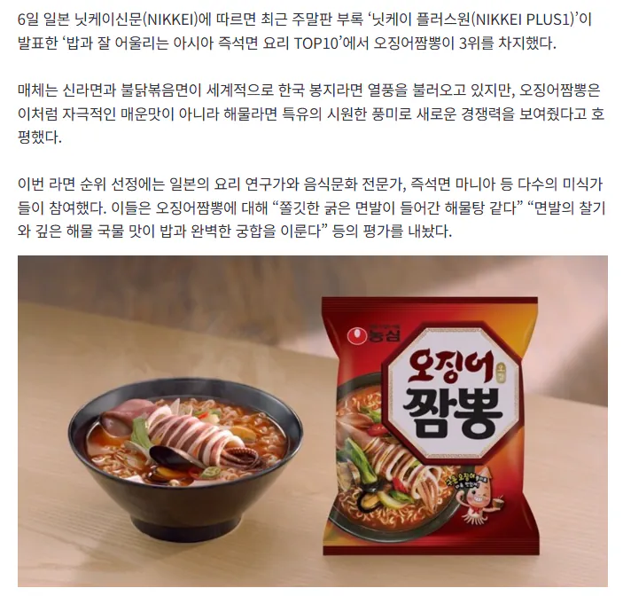

오짬 ㄷㄷ


오짬 ㄷㄷ
너구리 하위호환
한번씩 ㅈㄴ땡기는것중에 하나
푹끓인 오짬 맛있음
오짬 맛있지
오짬 작은컵라면이 진짜 개맛도리
저기 라면마다 미끌거리는 미역같은거는 왜 있는거야, 저것만 없으면 좋겠구만
존나 맛없는 국도 오짬 스프 넣으면 갑자가 맛있어짐 존나 마법의 가루임 ㄷㄷㄷ
부대찌개면 단종됐나 졸라맛잇엇는데
최근 몇년간 판매 중인게 리뉴얼 버전으로 알고 있는데. 어쨌든 아직 팔고 있더라.
마른오징어 가위로 잘게 썰어 넣어서 먹으면 그냥 진짜 짬뽕임
내기준 불닭이랑 참깨라면 다음으로 젤맛있음
오짬 너무달아
생산 공장 차이 인지 환상적으로 맛있어서 다음에 먹으면 밀가루 냄새, 비린내로 실망하는 경우가 있음
오짬에 넓적한 치즈하나 넣어먹으면 존맛인데
언제는 감자면이라더니
오짬 요즘 너무 달아져서 안먹음
응 구라즐
농심 요즘 많이 급하군아
의외로 진순이 아니네. 일본인픽일줄 알았는데
오짬은 컵이지 무슨 ㅋㅋ
오짬 꽤 매움